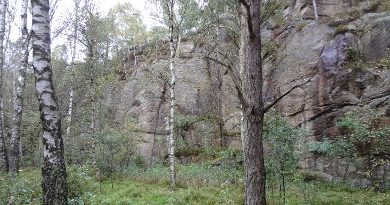

GPS: 57.70103,12.05724
Härlanda Tjärn är en fin badsjö. Inte så långt ifrån badplatsen ligger Brudaremossen, en ganska bred klippa 10-12 meter hög. Om man istället följer 8ans spår åt vänster innan/vid parkeringen kommer man till Härlanda Tjärn/Västra långvattnet. Finns även bouldering i skogen. se gbo-crimp.
Området är ett naturreservat och väldigt välbesökt. Följ de anvisningar som finns på uppsatta skyltar vid parkeringar och överallt i området.
Ta buss 17 till Spåntorget, följ höger skyltat badplats "Härlanda Tjärn". Precis innan parkeringen hittar du starten på åttans spår, de olika klipporna beskrivs härifrån.
Promenad: följ åttans spår tills du ser klipporna på vänster sida, knappt en kilometer.
Klippan hittas om man går ifrån parkeringen vid Härlanda tjärn, precis innan parkeringen följer åttans spår. När man kommer till en sjö som heter Svarttjärn håller man höger och går åt hållet skyltat mot Brudaremossen, klippan ligger på vänster sida om stigen. Klippan ligger skuggigt, är smutsig och det är mycket mygg här. Dock är klippan ganska bred och det finns väldigt många oklättrade sprickor. Nyturs-potential!
Fortsätt förbi Brudaremossen.
Kategori:Göteborg
Copyright (C) Permission is granted to copy, distribute and/or modify this document under the terms of the GNU Free Documentation License, Version 1.3